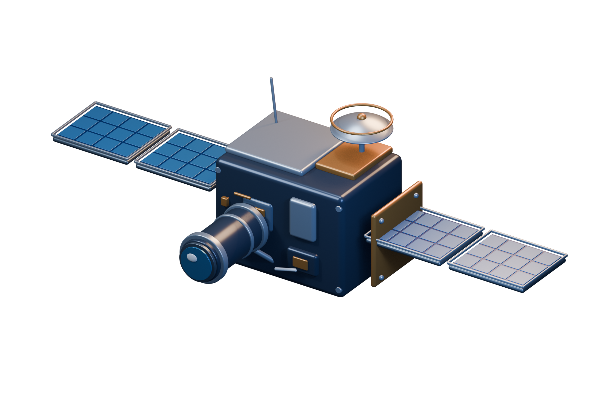

Original Blender model
Inside a
small satellite
Concept model: a small spacecraft built to observe Earth.
Optics · avionics · power

Optical payload
Spacecraft bus
Solar wing
Concept model: a small spacecraft built to observe Earth.
Optics · avionics · power
